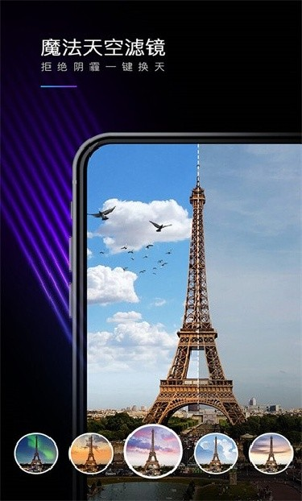
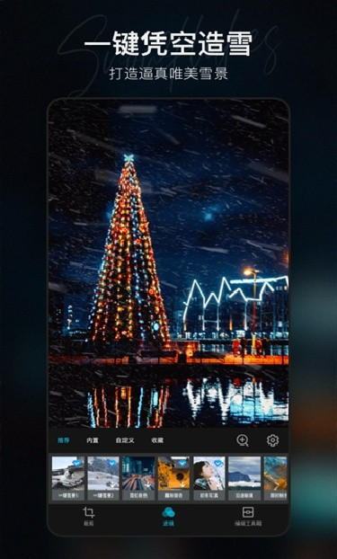

Mixkit 看着简单，其实有四个坑我踩过了
Mixkit 作为一款热门修图应用，上手门槛低但暗坑不少——装不上、工具找不到、批量翻车、字体乱加，每一个都能让你半小时白忙活。本文把这些踩过的坑逐个摊开，附解法。
先说结论：Mixkit 是我用过最顺手的修图工具之一，它的官网上功能介绍写得相当清楚，但第一次装它时我在安装环节卡了四十分钟，后来又因为找不到滤镜栏后半段的「魔法天空」以为应用阉割了功能。回头看这些坑其实都有标准答案，只是没人提前告诉你。这篇把我踩过的四个坑逐个摊开，照着做能少走不少弯路。
第一个坑：装不上就反复点，忘了查报错
我第一次装 Mixkit 遇到的是「解析包时出现问题」——以为下载中断了，从下载渠道重新拉了一遍，还是报错。又换了三个文件管理器打开 APK，挨个试，折腾了快半小时才反应过来：我手机安卓版本低于这个应用的最低要求。
Mixkit 对系统版本有硬性要求，老机型直接解析失败不给任何缓冲。还有一次帮朋友装，点了 APK 完全没反应，屏幕一角冒了个极快的 toast「禁止安装未知来源」就消失了。后来才知道安卓 8.0 之后系统把这个权限拆成了「每个文件管理器单独授权」——你给整个系统放开未知来源没用，得去设置里找到你用来打开 APK 的那个文件管理器，单独授予「安装未知应用」权限。
还有两个常见症状顺便提一下：
一个是「存储空间不足」的提示。很多人以为清出几百兆空间就够了，其实安装过程需要两倍于包体积的临时空间——Mixkit 的安装包通常在 120 兆左右，意味着你得清出至少 2GB 的空闲空间才能安心装。清缓存 > 清旧照片 > 清大文件，优先级别搞反。
另一个是「与已装应用冲突」。如果你之前装过同包名的旧版（包括早期以别的名字上架的版本），系统会尝试覆盖安装。但如果新包和旧包签名不一致——比如来自不同分发渠道——覆盖会失败。这时候必须先卸载旧版再装新版，但注意应用内的草稿会随卸载一起消失，之前没导出的成品记得提前备份。
实在不行的话还有三板斧：重启手机清掉安装服务的临时状态、换一个文件管理器打开、换一个版本号的包试试——有些版本之间存在机型兼容性差异。
第二个坑：工具栏没滑到底，错过半条功能
Mixkit 的界面结构是三大模块：编辑、创意、海报，底部一条工具栏挂着所有工具。但我第一次打开时只用了前半段的基础调节和几个常用滤镜，滑到中间以为到头了——结果漏了滤镜栏最右侧藏着的「魔法天空」。
这个坑的根源是底部工具栏可以横向滑动，但它没有滚动条或箭头提示，视觉上就是一排按钮排在那里，很容易让人以为「右边没东西了」。我当时在创意区翻了半天找天空替换，还以为这个功能被砍掉了。
解决办法很简单：进入编辑界面后，不管当前想调什么，先把底部工具栏从左滑到右完整走一遍。滑完你会发现后半段藏着纹理、魔法天空、天气特效这些入口，滤镜缩略图本身还能继续横滑，有八种风格分组。更详细的分组说明和参数可以翻Mixkit文档，里面写得比我这里全。记住这个动作，下次遇到找不着功能的情况先滑工具栏，再去创意区翻。

第三个坑：批量处理想偷懒，结果全组翻车
Mixkit 的批量处理工具定位很明确——「如果您希望用相同或者类似的效果处理一组图片，可以显著提高效率」。我第一次用它处理二十张同场景照片，挑了一张调得很满意的配方直接全组套用，结果有七八张色调明显不对。
原因出在哪里？我那张代表性照片的光线是组里最亮的一张，配方里加了较重的对比度和颗粒感——这些参数在标准光线上看着没问题，套到其他偏暗的照片上颗粒就变成了噪点，对比度也拉得太过。批量的坑不是「配方不能用」，而是「配方不能太极端」。
批量处理有三个边界要记牢：
裁剪不跟批。构图是每张照片最个体化的部分，批量只负责统一色调，裁剪留给单张。别指望一次批量把所有事干完。
配方要选「宽容」的。大偏色、重颗粒、极端饱和度这些参数不要放进批量配方。配方应该是在组内大多数照片的光线下都成立的「安全区间」参数。
先小批量试，再全组上。第一次用某配方，先套三五张看效果，确认色调统一且没有翻车的个案，再批量应用。我后来养成了这个习惯，批量翻车的概率直接降到零。

第四个坑：加文字乱堆字体，气质全毁
Mixkit 的文字工具支持 500+ 字体和贴纸，给照片加字门槛极低——但门槛低不代表容易加得好看。我一开始做系列海报，每张用了两到三款字体，结果组图看下来像是拼凑的，缺乏统一感。
字体选择的三个原则我后来总结成了口诀：一图一字体（最多加一款正文）、气质对位（衬线配复古、圆润配生活、细黑体配简约）、花哨艺术字体只给三个字以内的标题。长句用艺术字体会严重影响可读性，得不偿失。
排版位置也有常识：人像照片的文字别贴主体脸部，放肩线以下或画面边缘；对齐三分线比居中更有设计感；利用裁剪时预留的留白区域放文字；浅色文字压在深色区时不加描边也清晰。还有一条底线：文字距画面边缘至少留 5% 宽度——平台裁切图片时会切伤贴边的文字，这个细节很多人忽略。
防坑清单
总结一下这四个坑对应的速查要点：
- 安装卡壳先看报错文案，版本不够就换包，权限没给就单独授权，空间不够就清到 2GB 以上，签名冲突先备份再卸载旧版
- 每次进入编辑界面先把底部工具栏从左滑到右，别漏后半段入口，滤镜缩略图还能继续横滑
- 批量配方保持参数温和，裁剪留给单张，先小批量试效果再全组应用
- 加字体控制在一图一款，花哨字体限三个字以内，文字远离边缘、避开主体脸部
知道这些坑之后，Mixkit 其实相当省心。安装环节花几分钟排对问题，工具入口花三十秒滑一遍工具栏，批量和排版各守好自己的边界，剩下的就是纯粹的修图乐趣了。安装包的整理清单和版本对照表分别维护在 GitHub、Gitee 和 GitCode，哪路访问方便就走哪路。